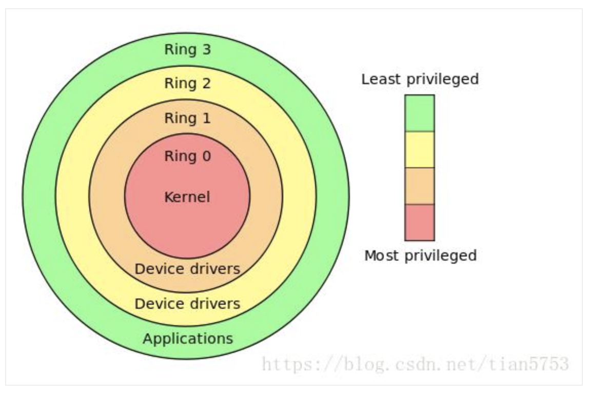

Reverse engineering
Tools¶
- Hex Editors
- Decompilers
- Disassemblers
- Debuggers
- Ring0
- Ring3
- System Monitoring Tools
- Windows API Monitoring Tools
- Diaphora - is a program diffing plugin for IDA / Ghidra: https://github.com/joxeankoret/diaphora
- YaDiff - is a program diffing
- BinDiff: Patch analysis
- radare2
- Frida - Dynamic instrumentation toolkit for developers, reverse-engineers, and security researchers: https://www.frida.re/
- angr - Python framework for analyzing binaries. It combines both static and dynamic symbolic ("concolic") analysis, making it applicable to a variety of tasks: https://angr.io/
- GEF - GDB Enhanced Features for exploit devs & reversers: https://github.com/hugsy/gef
- YY-CHR - Supports editing NES, SNES, Genesis, PCE, GG, WS/C, GB/C, MSX 1+2, NGP/C, SMS, and GBA graphics: https://www.romhacking.net/utilities/119/
- ProcDump - ProcDump provides a convenient way for Linux developers to create core dumps of their application based on performance triggers: https://github.com/Microsoft/ProcDump-for-Linux
- mleak - Memory leak tracer for C programs: https://github.com/hyc/mleak
- Demangle function names (C/C++): http://demangler.com
Collections¶
- Vagrant box with binary analysis tools: https://github.com/Hamz-a/binanalysisbox
- microsoft-pdb: https://github.com/Microsoft/microsoft-pdb
cvdump Whatever.pdbhttps://github.com/Microsoft/microsoft-pdb/blob/master/cvdump/cvdump.exe- How to Inspect the Content of a Program Database (PDB) File: https://www.codeproject.com/Articles/37456/How-To-Inspect-the-Content-of-a-Program-Database-P
- https://docs.microsoft.com/en-us/windows-hardware/drivers/debugger/debugger-download-symbols
- https://techcommunity.microsoft.com/t5/iis-support-blog/pdb-downloader/ba-p/342969
Language/OS Specific¶
Linux¶
Setup
- Disable ASLR:
sudo sysctl -w kernel.randomize_va_space=0 - Allow ptrace processes:
sudo sysctl -w kernel.yama.ptrace_scope=0 - Installing 32bit Libraries
GDB
dpkg --add-architecture i386 apt-get install libc6:i386
- Run GBD with env variables:
env - gdb /bin/lcars - Display Information
info registers info all-registers
- Display memory map:
vmmap - Display Registers / Memory:
display /x $eaxx/50c $eaxx/s $eax - Disassemble-flavor:
set disassembly-flavor intel - Disassemble:
disassemble $eip - Print Type Information:
ptype Student - Check security information:
checksec
References
- ELF Binary Mangling Part 1 — Concepts: https://medium.com/@dmxinajeansuit/elf-binary-mangling-part-1-concepts-e00cb1352301
- Elf Binary Mangling Pt. 2: Golfin’: https://medium.com/@dmxinajeansuit/elf-binary-mangling-pt-2-golfin-7e5c82bb482c
- Elf Binary Mangling Part 3 — Weaponization: https://medium.com/@dmxinajeansuit/elf-binary-mangling-part-3-weaponization-6e11971108b3
- http://romainthomas.fr/slides/18-06-Recon18-Formats-Instrumentation.pdf
- Dissecting and exploiting ELF files: https://0x00sec.org/t/dissecting-and-exploiting-elf-files/7267
Windows¶
Tools
- Collections
- A list of static analysis tools for Portable Executable (PE) files: https://www.peerlyst.com/posts/a-list-of-static-analysis-tools-for-portable-executable-pe-files-susan-parker?utm_source=twitter&utm_medium=social&utm_content=peerlyst_post&utm_campaign=peerlyst_shared_post
- Generate call graphs from VBA code - https://github.com/MalwareCantFly/Vba2Graph
- libpeconv - A library to load, manipulate, dump PE files https://github.com/hasherezade/libpeconv
- filealyzer - Helps you explore alternate data streams, #PE/#ELF data and anomalies, file signatures, EXIF data, MZ header, #OpenSBI, #PEiD, #VirusTotal, Android and iOS app (file) info, all in one neat UI: https://www.safer-networking.org/products/filealyzer/
- WinDbg - Toy scripts for playing with WinDbg JS API: https://github.com/hugsy/windbg_js_scripts
- HXD - Hex Editor: https://mh-nexus.de/en/hxd/
Defense
- Control Flow Guard - Protects the execution flow from redirection - for example, from exploits that overwrite an address in the stack https://86hh.github.io/cfg.html
References
- Rich Header - http://bytepointer.com/articles/the_microsoft_rich_header.htm
- Learning binary file formats:
.NET¶
- File Format
.text- Import Table, Import Address Table and .NET Section.reloc- To relocate the address which the EntryPoint instruction jumps to (it's the only address contained the IAT). The IT counts just one imported module (mscoree.dll) and one imported function (_CorExeMain for executables and _CorDllMain for dynamic load libraries)..rsrc- Main icon for an executable, since all others resources are in the .NET Section.- https://www.ntcore.com/files/dotnetformat.htm
- https://www.red-gate.com/simple-talk/blogs/anatomy-of-a-net-assembly-pe-headers/
- Dynamically load memory-only modules: Assembly.Load(byte[])
- .NET framework included in OS version: https://blogs.msdn.microsoft.com/astebner/2007/03/14/mailbag-what-version-of-the-net-framework-is-included-in-what-version-of-the-os/
Tools
- CFF Explorer: https://ntcore.com/?page_id=388
- PE inspection library allowing .NET programmers to read, modify and write executable files: https://github.com/Washi1337/AsmResolver
- Parser for Windows Portable Executable headers: https://github.com/secana/PeNet
References
- Reverse Engineering .NET Applications For Beginners: https://www.youtube.com/watch?v=KOVXWRrd_qg
Techniques¶
Stack Based BOF
- Day 71: Essential Immunity Commands for OSCP and CTFs: https://medium.com/@int0x33/day-71-essential-immunity-commands-for-oscp-and-ctfs-cebfe06d935a
Practice¶
Defense¶
- Disassembly desynchronization: https://github.com/yellowbyte/analysis-of-anti-analysis/blob/master/research/the_return_of_disassembly_desynchronization/the_return_of_disassembly_desynchronization.md
References¶
- Basic Reverse Engineering with Immunity Debugger: https://www.sans.org/reading-room/whitepapers/malicious/basic-reverse-engineering-immunity-debugger-36982
- 101 - https://www.youtube.com/watch?v=Min6DWTHDBw&feature=em-uploademail
- Reverse Engineering for Beginners: https://www.begin.re/
- Learning Radare2 by Reversing a UMPC Bios: https://stragedevices.blogspot.com/2019/02/finding-verified-intel-atom-msrs-in.html
- Survival guide for Radare2 with practice: https://github.com/ZigzagSecurity/survival-guide-radare2
- http://www.capstone-engine.org/showcase.html
- Reverse engineering simple binaries created in Fortran, C, C++, Pascal and Ada: https://www.mkdynamics.net/current_projects/computer_security/Disassembling_binaries/disassembling_binaries.html
- Port-oriented Programming: https://twitter.com/bxl1989/status/1085101696735268865
- OALabs - WinDbg Basics for Malware Analysis: https://www.youtube.com/watch?v=QuFJpH3My7A&list=PLGf_j68jNtWG_6ZwFN4kx7jfKTQXoG_BN
- The 101 of ELF files on Linux: Understanding and Analysis: https://linux-audit.com/elf-binaries-on-linux-understanding-and-analysis/
- Ground Zero: Reverse Engineering: https://scriptdotsh.com/index.php/category/reverse-engineering/
- DEF CON 26 - Alexei Bulazel - Reverse Engineering Windows Defenders Emulator: https://www.youtube.com/watch?v=2NawGCUOYT4
ARM
- SUE 2017 - Reverse Engineering Embedded ARM Devices - by pancake: https://www.youtube.com/watch?v=oXSx0Qo2Upk&feature=youtu.be
- ARM ASSEMBLY BASICS CHEATSHEET: https://azeria-labs.com/assembly-basics-cheatsheet/
GO
- Set of IDA Pro scripts for parsing GoLang types information stored in compiled binary: https://github.com/sibears/IDAGolangHelper
Java
- Toold, JADX, JD-GUI, Procyon, CFR, Fernflower etc., Bytecodeviewer, dex2jar, APK tool
Mobile Apps
- Inro: https://medium.com/@xplodwild/turning-the-frustration-of-a-mobile-game-into-a-reverse-engineering-training-a9887043efdf
- They updated, we dumped memory: https://blog.usejournal.com/reverse-engineering-of-a-mobile-game-part-2-they-updated-we-dumped-memory-27046efdfb85
- Now, it’s obfuscated: https://medium.com/@xplodwild/reverse-engineering-of-a-mobile-game-part-3-now-its-obfuscated-9c31e29c386b
VNotes¶
-
Introduction to RE
-
Why RE is necessary (no-support/source/malware)
- IA-32 CPU architecture
- General Purpose Registers (V1 C3.4.1):
- EAX - accumulator
- EBX - pointer to data in DS segment
- ECX - counter for string and loop operations
- EDX - I/O pointer
- ESI
- Pointer to data in the segment pointed to by the DS register
- Source pointer for string operations
- EDI
- Pointer to data or destination in the segment pointed to by the ES register
- Destination pointer for string operations
- ESP - Stack pointer, in the SS segment
- EBP - Pointer to data on the stack, in the SS segment
- Accessing parts of registers (EAX AH AL)
- EFLAGS (V1 C3.4.3)
- Arithmetic: OF SF ZF AF PF CF
- ZF
- SCAS
- CMPS (CMSB/CMPSW/CMPSD)
- LOOP (LOOPE/LOOPE/LOOPZ/LOOPNE/LOOPNZ)
- DF (direction flag)
- 1: String instructions auto-decrement (processed from higher to lower address)
- 0: String instructions auto-increment (processed from from lower to higher address)
cldto **cl**ear **d**irection flagstdto s**e**t **d**irection flag- String operation
- ESI/EDI: must point to either to start/end of the string
- ECX must contain number of bytes to compare
- IOPL (IO **p**rivilege **l**evel) - OS operations
- Trap Flag - Enable single step mode (debugging)
- Segment Registers (V1 C3.4.2)
- CS - code
- DS - data
- SS - stack
- ES - data
- FS - data
- GS - data
- EIP - Instruction Pointer Register = PC (V1 C3.5)
- Cannot access directly
- DR0 - DR7: Debug Registers (V3 C317.2)
- DR0 - DR3 are important: Used to store hardware breakpoints (addresses)
- Cannot be accessed directly from userland (Ring-3)
- In Windows use Ring 3 API and transfer execution to kernel level to update the register
- Machine/Model Specific Registers (V1 C3.2)
- Not accessible to applications, except from Time-Stamp Counter
- 64-bit
- Read using RDTSC (Read time-stamp counter)
- Low read to EAX
- High read to EDX
- Incremented with every clock cycle (reset when processor reset)
- General Purpose Registers (V1 C3.4.1):
- CPU has a thread-wise context
- Software breakpoints work by 0xCC (int 3h) instruction. Core modification, is independent from thread context.
- Functions
- Why functions are required in a program
- Execution flow changes and it's required to remember where the execution was left off (and registers)
- Introduce stack (SS)
- Stack: https://en.wikibooks.org/wiki/X86_Disassembly/The_Stack
- Process:
- Contain threads
- Created by OS and provided with a virtual address space
- OS creates at least one thread, ready to be executed
- Thread:
- Has it's own stack
- Share the same virtual address space (of process)
- Time slice assigned by processor to that specific process
- Singe processor system: One thread at a time
- Multi processor system: Simultaneous threads
- Multi-tasking: Illusion of simultaneous execution of multiple application at the same time
- Multi-threading: Multiple threads that actually run in parallel
- PUSH POP - LIFO and bottom to top nature
- ESP always point to TOS is decremented to point to new place
- Addition decrement
- Removal increment
- ESP always point to TOS is decremented to point to new place
- Process:
- Function calling (V1 C6): https://en.wikibooks.org/wiki/X86_Disassembly/Functions_and_Stack_Frames
- Parameters pushed to stack
- CALL
- Push return address to (return IP) ti stack
- Load the address of the function's entry-point (to EIP)
- RET
- POP address from TOS to EIP and resume execution
- RET 4. RET + increment ESP 4 bytes (used in
stdcallandfastcall)
- Stack frames (V1 C6)
- Each function need a way to store return/local variables etc.
- Function
prologuecreate a frame for each function- After this some GP registers stored in stack
- Function
epiloguere-balance the stack (free memory) after execution- Before this GP registers are restored
- prologue: https://en.wikipedia.org/wiki/Function_prologue
push ebp # save base pointer mov ebp, esp # set the base-pointer, so that it points to the top of the stack sub esp, N # allocate memory for current stack frame
enter N, 0 # More complex prologues can be obtained using different values (other than 0)
- function invocation
push eax # save registers push ebx # Function body pop ebx # restore saved registers pop eax
- epilogue:
mov esp, ebp # free memory allocated for current stack frame pop ebp # restore previous base pointer ret # exit function
leave ret
- Calling conventions: https://en.wikibooks.org/wiki/X86_Disassembly/Calling_Conventions
cdecl- Arguments are passed on the stack in
Right-to-Leftorder, andreturn values are passed in eax. - The
calling function cleansthe stack.- CDECL functions to have variable-length argument lists (aka variadic functions)
- Number of arguments is not appended to the name of the function by the compiler, and the assembler and the linker are therefore unable to determine if an incorrect number of arguments is used.
- CDECL functions are almost always prepended with an
_._cdecl int MyFunction1(int a, int b) { return a + b; } x = MyFunction1(2, 3);
_MyFunction1: push ebp # prologue mov ebp, esp # prologue mov eax, [ebp + 8] # read 1st param into eax mov edx, [ebp + 12] # read 2nd param into abx add eax, edx pop ebp # epilogue ret # epilogue push 3 # push rightmost param into stack (b) push 2 # push next-rightmost param into stack (a) call _MyFunction1 # call add esp, 8 # calling function cleans (free memory)
- Arguments are passed on the stack in
stdcall(WINAPI)- Exclusively by Microsoft as the standard calling convention for the Win32 API
- Arguments are passed on the stack in
Right-to-Leftorder, andreturn values are passed in eax. (same as__cdecl) - The
called function cleansthe stack, unlike CDECL.- STDCALL doesn't allow variable-length argument lists.
- Name-decorated with a leading
_, followed by an@, and then thenumber (in bytes)of arguments passed on the stack. This number will always be a multiple of 4, on a 32-bit aligned machine. - Resulting code is smaller because
clean upinstructions are not repeated with each invocation._stdcall int MyFunction2(int a, int b) { return a + b; } x = MyFunction2(2, 3);
:_MyFunction2@8 # Function name contains info about number of bytes to clean push ebp # prologue mov ebp, esp # prologue mov eax, [ebp + 8] # read 1st param into eax mov edx, [ebp + 12] # read 2nd param into abx add eax, edx pop ebp # epilogue ret 8 # epilogue + called function cleans (free memory). 8 is how many bytes to pop off. push 3 # push rightmost param into stack (b) push 2 # push next-rightmost param into stack (a) call _MyFunction2@8 # call
fastcall- not completely standard across all compilers
- first 2 or 3 32-bit (or smaller) arguments are passed in registers, with the most commonly used registers being
edx,eax, andecx - Additional arguments, or arguments larger than 4-bytes are passed on the stack, often in
Right-to-Leftorder (similar to CDECL) Calling function cleansmost frequently- prepends an
@to the function name, and follows the function name with@x, where x is the number (in bytes) of arguments - FASTCALL function doesn't need a stack frame
- Commonly
gccandWindows FASTCALLconvention pushes parameters one and two intoecxandedx, respectively, before pushing any remaining parameters onto the stack._fastcall int MyFunction3(int a, int b) { return a + b; } x = MyFunction3(2, 3);
:@MyFunction3@8 push ebp # prologue mov ebp, esp # prologue add ecx, edx # a is in ecx, b is in edx pop ebp # epilogue ret # epilogue mov ecx, 2 # move rightmost param to eax mov edx, 3 # move next-rightmost param to edx call @MyFunction3@8
- Read EIP (used in
relocatable code)- Move return address (EIP) to the EAX register
GetEIP proc mov eax, dword ptr ss:[esp] ret GetEIP endp
- Put the address of previous instruction executed into EAX. Usable to locate other parts of code in memory (by adding / subtracting to EIP value):
Call _getEIP _getEIP: pop eax
- Move return address (EIP) to the EAX register
- Heaps - Dynamically & runtime allocated memory (used to store data that doesn't fit in stack)
- Handles - References to resources. Used by OS to control resource access.
- Example: To access a file need to create a file-handle using Windows API.
- Exceptions: Events occurred during runtime. and handlers to handle events.
- Hardware exceptions: Bad sequence (div by zero). OS map to error codes.
- Software exceptions:
- Windows implements:
Structured Exception Handling (SEH)to handle both software and hardware exceptions.

- The CPU ring0, ring1, ring2, ring3: http://www.programmersought.com/article/47422162127/
- Tracking Ring3 - Ring0 of running processes: http://www.programmersought.com/article/81722595513/;jsessionid=B89F397D53E2BA65418324AA33A1437D
- The CPU privilege level is divided into four levels:
RING0,RING1,RING2,RING3. - Windows uses only one of the two levels
RING0andRING3(userland). - If the application attempts to execute
RING0general instructions, then Windows will displayIllegal Instructionerror message. - Windows
Ring3Internal Structures http://index-of.es/EBooks/nt_internals.pdf:THREAD_ENVIRONMENT_BLOCK (TEB)contains:- Address of the top and bottom of current thread's stack
- Thread identifier
- Process thread belongs to
- Code of the last error
- Address of the
Thread Local Storage (TLS) - Address of the
PROCESS_ENVIRONMENT_BLOCK (PEB)
PROCESS_ENVIRONMENT_BLOCK (PEB)contains:- Image base of the process
- Address of Loader data structure (PEB_LDR_DATA)
NtGlobalFlagvalue (useable in detecting debugging)- Major and minor version of Windows OS
- Number of processors
BeingDebuggedflag (useable in detecting debugging)
CONTEXTcontains:- All CPU state info for thread (during internal operations)
- Windows APIs
Ring3OS functions- Communicate with kernel function in a safe way (app to OS communication)
- Categories:
- Administration and Management
- Diagnostics
- Graphics and Multimedia
- Networking
- System Services
- Windows User Interface
- Tool categories
- Immunity Practice
- Level 1: App that branch based on password. Function that return if password is valid using two params.
- Change ZF
- New origin
- Substitute JMP with NOPs (Binary -> Fill with NOPs)
- Substitute JMP to desired location (Binary -> Edit and set offset to X)
- Inverse JMP (double click on instruction and change JNE to JE, etc.)
- Check params sent to check function and extract password.
- Save changes with right-click, save to executable. right-click save-file.
- Looking at memory regions
- PE information: Right click "PE header" memory section -> dump in cpu -> right-click in dump -> special -> PE header
- Check offset value and go to that address
- Beginning of section:
from memory view - Actual beginning of section within binary:
PointerToRawData
- Find offset within binary:
offset within code section= (address of the instruction-start address of code section)offset within code section+PointerToRawData of the code section=exact location within binary
- Level 1: App that branch based on password. Function that return if password is valid using two params.